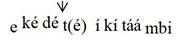

The Problem of Writing about the Logoori Language
David Odden
This note reports on certain aspects of linguistic research which we have been doing on the Logoori language, in advance of circulating our descriptive monograph on the language. It is specifically addressed to Logoori speakers who might be interested in our findings, but do not have a background in linguistics which tells you how to interpret some special symbols that we use. Or, we hope this note will make speakers of Logoori aware of some features of the language that they may not have known previously. In this note we will give example words, and if you are reading the file on a computer or phone, you should be able to hear the recordings of words that we provide. When you see a play button after a word or phrase, if you click / press itt, the word should play (you may need to tell your computer to “allow” your sound player to play the file). Computer technology does not always work, so it is possible that you can’t hear the recordings.
Our goal is to accurately report the facts of the Logoori language. The first problem for accurate reporting is, how do we represent actual pronunciation in a written form? There is no single standard for writing Logoori, even though certain practices are often followed. (We should mention that the name of the language is an extreme example of the problem. There is the fact that the language is often called “Maragoli”. You will encounter various spellings such as Logori, Logooli, Llogori, Logoori.) We cannot rely on any existing writing scheme, because all schemes leave out important facts of pronunciation about the language. There are three major features of pronunciation that are important in the language (those aspects are the main purpose of this note which we discuss first), and three other simpler problems discussed at the end. These facts of pronunciation are not consistently noted in writing. To understand the claims that we are making, we encourage speakers of the language to pronounce the words what we provide and think about their meanings, to see how pronunciation affects meaning. We also encourage you to compare your own pronunciation with the recordings contained here.
As you will discover from this note and the full grammar (and are no doubt aware, based on your experience with how people talk), pronunciations vary quite a lot in the language. We are reporting these facts for scientific reasons: we do not assume anything about how words should be written in ordinary writing. There are some advantages to having a unified spelling, where the word ‘day’ is spelled in just one way: whether that should be ilidiku, lidiku, iridiku, iddiku or something else is a very difficult decision.
Long Vowels
The first such fact of pronunciation is the length of vowels. The word kondora ‘to pick me up’ is pronounced differently from kondora ‘to see me’; ma vahere ‘they will inhale’ is pronounced differently from ma vahere ‘they will come to an end’; kokera ‘to age (of women)’ is different from kokera ‘to milk’. The difference in pronunciation is that in one case, the underlined vowel is short, and in the other case the vowel is long. This difference is recognised in many standard spellings of the language, though this practice is not always observed. These words would be written as koondora ‘to see me’, koondoora ‘to pick me up’, ma vahere ‘they will come to an end’, ma vaheere ‘they will inhale’, kokera ‘to milk’, kokeera ‘to age’. Similar examples are kuragira ‘to promise for’, kuraagira ‘to eat ugali’, kutura ‘to leave’, kutuura ‘to unload’, kuvura ‘to fail or lack’, kuvuura ‘to reveal’ and yaara ‘sue!’, yara ‘spread the bed!’.
It has been somewhat traditional to write words like kutanga ‘to start’ , kogenda ‘to walk’ with a single vowel (in the 1996 New Testament translation, these and similar vowels are often written single), but these vowels are actually pronounced long, and this fact is recognised in the dictionary of Joseph Ndanyi. The reason for this inconsistency is that there is a rule of the language which makes vowels long before combinations of m, n plus other consonant b, d, j, g, z in some contexts. But that rule is very complicated and does not apply everywhere, for example, it does not apply in izingugi ‘baboons’, nor in nzumbakaa ‘I am building’. The prefix rwa meaning ‘when’ has a long vowel in some cases (rwaandeekaa ‘when I cook’, rwaandeechi ‘when I cooked (recent)’), but a short vowel in other cases (rwandaadeeka ‘when I cooked (long ago)’ rwangedeekaa ‘when I am still cooking’). If a simple rule cannot be given about pronunciation, our system of writing needs to include that information. So we write double vowels whenever a vowel is pronounced long, and we will write single vowels whever a vowel is pronounced long.
Tone
Another important fact about the language, which has never been indicated in any spelling, is that Logoori is a tone language, meaning that voice pitch is part of the makeup of a word, just like the consonants and vowels are. Some examples of pairs of words having different tones are as follows:
| kwiizuriza | ‘to remember’ ; ‘to fill something’ | |
| vaamiga | ‘they strangled’ ; ‘they strangled me’ | |
| kuviimba | ‘to put on a roof’; ‘to swell’ |
When you say kwiizuriza with the meaning ‘to fill something’, it is pronounced differently from kwiizuriza meaning ‘to remember’.
Another example of a tonal difference is yaakagura, which with one tone means ‘he has bought’ (if you are making an announcement that he has finally bought some thing), and with another tone means ‘he bought’ (typically as an answer to a question like ‘where did this thing come from?’). One last example is umuundu yaavariza, where the word umuundu if pronounced differently, depending on whether the sentence means ‘the person counted’ or ‘the person who counted’ .
When we present examples of Logoori, we add accents to vowels to indicate those places where the voice goes up, which marks the difference between these words.
|
| kwiizʊriza | ‘to remember’ | kwíízuriza | ‘to fill’ |
|
| yaakagura | ‘he bought’ | yáákagura | ‘he has bought’ |
| umúúndú yááváriza | ‘the person counted’ | |
| umúúndu yááváriza | ‘the person who counted’ |
In kwiizʊriza ‘to remember’, the voice remains low through the word, but in kwíízuriza ‘to fill something’, it is high on the first syllable then drops down after that. We say that the first syllable of ‘to fill something’ has a high tone, and the other syllables have low tone. All syllables in ‘to remember’ have low tone. We have the same pattern in yaakagura ‘he bought’ (all syllables are low tones) and yáákagura ‘he has bought’ (only the first syllable is high toned).
In both váámíga ‘they strangled’ and váámiga ‘they strangled me’, the voice starts high, but in ‘they strangled me’, it remains high through the second syllable mí, whereas it drops down on mi in váámiga ‘they strangled me’. In kuviimba ‘to put on a roof’ the voice stays low throughout the word, and in kuvíimba ‘to swell’ it goes up on the second syllable víi, then falls back down.
The tone pronunciation of a word is affected by what kind of sentence the word appears in. The word umuundu ‘person’, when said alone, has only low tones, and no high tones. In the sentence umúúndú yááváriza ‘the person counted’, the voice goes up on the second or sometimes first syllable and stays up until the syllable va. In umúúndu yááváriza ‘the person who counted’, the voice goes up for múú, goes back down for ndu, and then back up for yáá.
The following words have a raised tone on the second from last vowel of the word, as indicated with the accent mark.
| uvutíma | ‘anger’ | ikidári | ‘bed’ | |
| umugádi | ‘bread’ | endéve | ‘chair’ | |
| rigútu | ‘elder’ | umurími | ‘farm’ | |
| urugága | ‘fence’ | ekedéte | ‘finger’ | |
| umurína | ‘friend’ | ikimúga | ‘gourd’ | |
| ɪridóshi | ‘mud’ | imbúra | ‘rain’ | |
| uvuchíma | ‘ugali’ | umhíga | ‘year’ | |
| iridíku | ‘day’ | iddíku | ‘day’ |
The last two words illustrate another fact about Logoori pronunciation, that some words have more than one pronunciation. There is a rule explaining why you can say both iridíku and iddíku, which we give in the grammar
In the following words, the voice remains low throughout, and no vowel has an accent mark.
| embeva | ‘mouse’ | inzaga | ‘marijuana’ | |
| umgoye | ‘rope’ | enzogu | ‘elephant’ | |
| irigina | ‘stone’ | umurimi | ‘farmer’ | |
| ikiriri | ‘violin’ | orovega | ‘direction’ | |
| umuroji | ‘witch’ | imivano | ‘knives’ | |
| ovosera | ‘porridge’ | umsigu | ‘enemy’ | |
| imiviri | ‘bodies’ | umgeni | ‘guest’ | |
| urugano | ‘story’ | inguvu | ‘cloth’ | |
| umgera | ‘river’ | uvurimu | ‘grass’ |
In these words, the voice is raised on the second to last vowel of the word.
| nyasáe | ‘God’ | ibarási | ‘horse’ |
| ikaháwa | ‘coffee’ | ibahásha | ‘envelope’ |
| ibiríga | ‘kettle’ | inavódo | ‘basket’ |
| embodóka | ‘jealousy’ | indurúmi | ‘seizure’ |
| ibaháti | ‘luck’ | iganísa | ‘church’ |
Compare the following words, where the voice is raised on the third to last vowel of the word.
| amagáraba | ‘bean leaves’ | amarásiri | ‘animal blood’ | |
| ekekéreko | ‘potash sieve | ekeréremo | ‘flat land’ | |
| ekeségese | ‘roof peak’ | ikiságanyi | ‘leaf bundle’ | |
| indúguda | ‘letter’ | irikávati | ‘culvert pipe’ | |
| iritíginyu | ‘heel’ | iritívuri | ‘answer’ | |
| ekehénene | ‘bird breastbone’ | ikikúguti | ‘whirlwind’ |
The tonal pronunciations of words is not absolutely rigid, and there are some general rules about other pronunciations that are possible. For example, the words indurúme, iganísa may also tend to be pronounced as indúrúme, igánísa, with raising of the voice on both the second and third from last syllables. Similarly, ekeségese and amagáraba may also be pronounced as ekéségese and amágáraba with raising of the voice on the third and fourth syllables from the end. The pronunciations indúrúme, igánísa, ekéségese and amágáraba may be more common than indurúme, iganísa, ekeségese and amagáraba. This grammar will explain the rules making these pronunciations all possible.
One rule which pervades the language is that when a word has a high tone, the vowels before it may also have the same high tone. The word umugera ‘river’ has no high tone when said alone, and it also has no high tone if combined with certain other words.
| umuger(a) umwaangu | ‘quick river’ | |
| umugera mulla | ‘1 river’ | |
| umugera vuza | ‘only a river’ |
Actually, in the pronunciation of the first example, the phrase is pronounced umuger-umwaangu, eliding the first vowel at the end of the word umugera. This is another aspect of Logoori pronunciation that is explained in the grammar. In this note, the final vowel will be written so that you will recognize the word, but the elided vowel is put in parentheses in order to indicate that it is not actually said in the recording.
But when other words (ones which have a high tone) follow this same noun, the pronunciation of the noun changes.
| umúgér(á) úmútáámbi | ‘long river’ | |
| umúgér(á) úmúzíllu | ‘cold river’ |
One final feature of tonal pronunciation needs to be pointed out. In umúgér(á) úmútáámbi and umúgér(á) úmúzíllu, the tone is constantly raised within the noun umugera, to the final syllable of the next word. This is different from the pronunciation of ekedet(e) ikitaambi ‘long finger’: the voice goes up on de and possibly ke, then drops a little, continues at a less-high level on the syllables te ki taa, then drops down to a low level.

When high tones have such a shift downwards, we mark that with a little raised exclamation point: ekédé!t(é) íkítáámbi. A similar example is the word uvuchíma ‘ugali’, when combined with the adjective vuráhi ‘good’: we may hear uvuchí!m(á) úvúráhi .
Some nouns have more than one high tone in them. For example, in these nouns, the first syllable has a high tone, then the tone drops part-way down.
| í!ndámá | ‘tobacco plant’ | é!ngókó | ‘chicken’ |
In these nouns, the first high tone is on the second and possibly first syllable, and a second lowered high is on the last two syllables.
| ikɪ́!fúryá | ‘pan’ | irí!várú | ‘ant type’ | |
| irí!gómyá | ‘banana’ | umú!zúné | ‘sunbird’ | |
| irí!kéré | ‘frog’ | urú!fúnú | ‘tether’ |
Here are more examples, where the word begins with some low toned syllables then has a high toned syllable, next a drop in pitch, and finally high toned syllables all the way to the end of the word.
| uruháá!ngáywá | ‘cave’ | iridáá!ndárwá | ‘tent canvas’ | |
| icháá!mégéré | ‘a mushroom’ | ikisíí!mbííkɪ́rá | ‘bird (whydah)’ |
Notice the difference in pronounciation between these pairs of nouns.
| ikijá!mányú | ‘squirrel’ | ekehénene | ‘breastbone’ | |
| ekemé!nénwá | ‘cartilage’ | ekéségese | ‘roof peak’ | |
| iridá!váryá | ‘clay paste’ | amagáraba | ‘bean leaves’ |
In both sets of words, the tone becomes high towards the beginning of the word and then drops down. In the words on the right, the tone drops further down than it does in the words on the right. The same pattern exists in these pairs of words.
| uruháá!ngáywá | ‘cave’ | umurógoori | ‘Logoori’ | |
| iridáá!ndárwá | ‘tent canvas’ | imíísheni | ‘mission’ | |
| icháá!mégéré | ‘a mushroom’ | umwúúmbachi | ‘builder’ | |
| ikisíí!mbííkírá | ‘bird (whydah)’ | ibáákoora | ‘cane’ |
You may find yourself confused about our claims if you don’t agree with these pronunciations. The fact is that there is a lot of variation in how words are pronounced, so we have observed pronunciations for ‘rabbit’ including kɪsʊ́ʊ́!ngʊ́ra, kɪ́!sʊ́ʊ́ngʊ́ra, kɪ́sʊ́ʊ́!ngʊ́rá, and kɪsʊ́ʊngʊ́ra. As far as we can tell, the word mrógoori always has this tone, and not *mrógóori; ‘people’ may be vaandʊ or avaandʊ, but never *váandʊ or *váandʊ. By including a number of examles, we hope you will at least agree with the majority of pronunciations that we provide. Our point is that pronunciations of words are not completely fixed across the language.
Vowel Qualities
In ordinary writing, Logoori uses the 5 vowel letters a e i o u which have letters in the Latin alphabet. The problem is that there are 7 vowels in the language: the letters i and u stand for a total of 4 different vowels. Linguistics has special symbols to make that difference clear: we can write [i] or [ɪ], [u] or [ʊ]. To show that there are 4 vowels for 2 ordinary letters, we will look at some forms of the verb, used to give orders. There is a difference bewteen how you would say ‘ask us!’ if you are speaking to one person, versus to a group of people. If you say it to one person, you say koteevé, and if you say it to a group of people, you say koteeví. In the examples, we translate this difference as ‘(plural)’.
|
| koteevé | ‘ask us!’ | koteeví | ‘(plural) ask us! |
|
| kʊchaayé | ‘speak ill of us!’ | kʊchaaí | ‘(plural) speak ill of us!’ |
|
| keyooyé | ‘scrape it!’ | keyooí | ‘(plural) scrape it!’ |
|
| vibaangé | ‘arrange them!’ | vibaanjí | ‘(plural) arrange them!’ |
You can see that in these examples, the form for speaking to one person ends in e, and the form for speaking to more than one person ends in i. There are some other changes in pronunciation that go with that difference -e versus -i. When a verb stem ends with y, it changes pronunciation before i so that it becomes very “light”, in fact may not even be there at all. In addition, the consonants k and g change to ch and j (some people may not go this – this is another are of variable pronunciation in the language).
In the form for addressing one person, the last vowel actually changes: it may also be i, depending on when the vowel before it. The rule is that when the preceding vowel is u or i, the final vowel of the singular is i and when the preceding vowel is a, e, o, the final vowel is e. (There are some complications, where you can get i after a, e, o which has to do with the consonant between the two vowels – we talk about this in the grammar). You might expect that ‘bite him!’ is pronounced the same as ‘(plural) bite him!’, but actually the singular and plural forms of the orders are pronounced differently: there are two kinds of i, as well as two kinds of u. The singular order has the vowel which we write as [ɪ], and the plural order has the vowel which we write as [i].
| mʊrʊmɪ́ (play) | ‘bite him!’ | mʊrʊmí (play) | ‘(plural) bite him!’ |
| kɪgʊrɪ́ (play) | ‘buy it!’ | kɪgʊrí (play) | ‘(plural) buy it!’ |
| kɪtuumɪ́ (play) | ‘cross it!’ | kɪtuumí (play) | ‘(plural) cross it!’ |
| kɪdiirɪ́ (play) | ‘hold it!’ | kɪdiirí (play) | ‘(plural) hold it!’ |
| i | |kʊríinga | | | |to fold | |157 |
| ɪ | |kʊkɪ́ɪnga (play) | | | |to protect | |156 |
| ɪ | |kʊrɪɪnda (play) | | | |to watch | |155 |
| u | |kʊduuha | | | |to be blunt | |163 |
| u | |kʊgúuta | | | |to overcome | |161 |
| u | |kʊ́kúunga (play) | | | |to chase away | |153 |
| u | |kʊnuura | | | |to snatch | |164 |
| u | |kʊtuuma | | | |to cover | |159 |
| ʊ | |kʊchʊʊnga (play) | | | |to strain | |154 |
| ʊ | |kʊdʊ́ʊka (play) | | | |to reach | |162 |
| ʊ | |kʊfʊʊma (play) | | | |to cover | |158 |
| ʊ | |kʊ́kʊ́ʊra (play) | | | |to extract | |160 |
| ʊ | |kʊrʊʊmba (play) | | | |to push | |165 |
| ʊ | |kʊtʊ́ʊnga (play) | | | |to pay | |166 |
Unsolveable matters
There are some problems with our plan to write Logoori in a way that reflects pronunciation which do not have a solution, as far as we can see. One of those problems is the matter of “l” versus “r”. There is a generally rule that the consonant is pronounced “l” when it is doubled (mʊlla ‘1’ referring to ‘river; person’), and as “r” with it is single (ndara ‘1’ referrig to ‘cow’). Even so, the “r” quality is different from “r” of English (in fact, in English, there is a lot of dialect difference in how “r” is pronounced). We have found that the r-like pronunciation sounds like it is “mixed with l” depending on the context and the individual. For example, the word ‘brick’ may sound more like lidá!fáari or ridá!fáari, and like “r” before i often sounds closer to “l”.
However, “l” does appear in some cases where we would not expect it, for example, the adjective kamíili will, for some speakers, be pronounsed with a clear but single l. The reason for this is clear, that the word derives from Swahili kamili, and some speakers therefore pronounce it with clear l. Likewise, the word ‘Luo”, ʊmjálwo, is as far as we know pronounced with “l” and not “r”.
Since our goal is to describe how people do pronounce words (and not how we think people should pronounce words – we have no basis for making that judgment), this means that we ought to write “l” in those cases where a person clearly say “l” rather than “r”. Therefore, in those cases where we notice clear “l”, we will present the example spelled with l. We may not always notice one of these surprising clear-l sounds. The point is that even though the difference between “r” and “l” is subject to a rule (single “r”, double “l”), single “l” is also entering the language.
Another problem regards what might be spelled “ny”. A simple illustration of the problem is a comparison of kweenya ‘to want’ and yeenyi ‘he wanted’ – “ny” is usually pronounced very differently in those words. The tip of the tongue is flatter and further forwards in kweenya, but the back of the tongue is more advanced and raised in yeenyi. However, these two types of ny are not always pronounced differently, and we think that for some people there is no distinction.
In this case, we have to resort to special letters, in order to indicate which pronunciation is used in speech. In our writing, we will use the special letter ɲ to indicate the kind of sound in kweenya, and we use “ny” for the sound in yeenyi. Here are some examples
ɲasáye ‘God’
vaanya ‘mothers’
mɲó!róró ‘chain’
ɪɲʊ́ʊ́mba , ɪnyʊ́ʊ́mba ‘house’
kʊnyɪɪra ‘to stretch’
kʊnyʊ́ʊnya ‘to give the breast’
koɲoora ‘to get’
kʊɲára ‘to be able’
komooɲa ‘to gossip’
komoonya ‘to cause to gossip’
kʊɲááɲa ‘to eat’
kʊɲáánya ‘to cause to eat’
kʊnyáánya ‘to cause to eat’
niara ‘to wither’
kʊ́ʊ́ɲɪmbɪra to sing for me
*kʊ́ʊ́nyɪmbɪra
ɲʊmbákáa I am building
*nyumbakaa